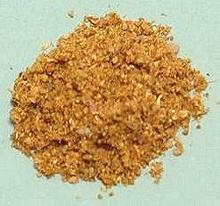

|
Xawaash Spice MixSomalia, East Africa - Xawaash | ||||
| Makes: Effort: Sched: DoAhead: |
6 T * 15 min Yes |
An essential for Somali cooking (say HA-wash), this mix is easy to make in any quantity. This recipe 3/4 fills a 4 oz spice jar. | |||
|
------ 3 3 3 ------ 2 3/4 7 2 |
--- T T --- t in t |
-- Toast Cumin seeds Coriander seeds Cardamon pods -------- Black Pepper Cinnamon Cloves, whole Turmeric |
Make: - (15 min)
|